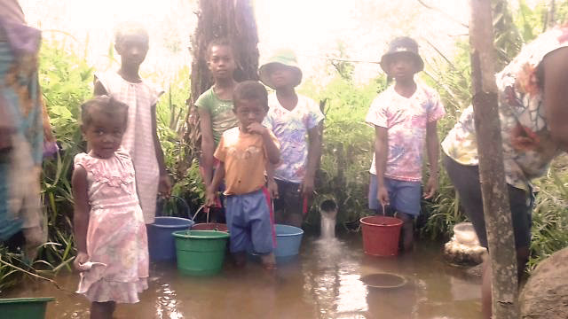
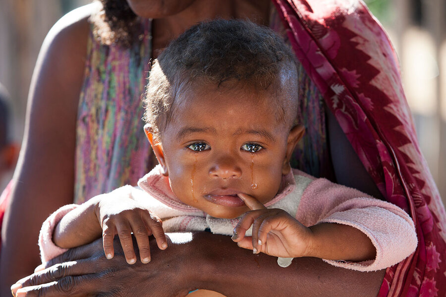
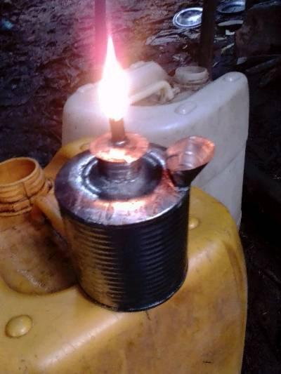
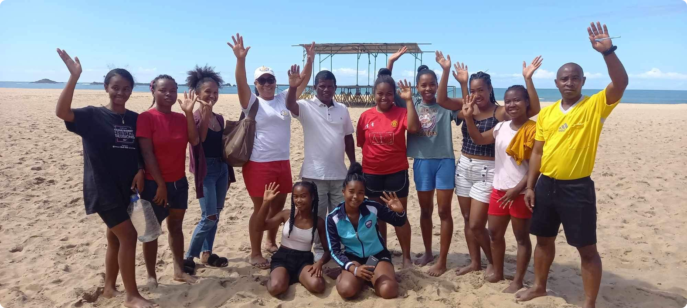

Zazany Madagascar, c’est l’histoire d’une femme d’origine malgache qui, malgré de nombreuses années passées en France, n’a jamais oublié Madagascar, son pays natal. Ce pays, très cher à son cœur malgré sa grande pauvreté, peine à se développer, et les enfants en sont les premières victimes.
Lors d’un voyage en 2009, elle a été profondément marquée par la misère qu’elle a vue autour d’elle. Elle s’est alors dit qu’elle devait agir, se demandant ce qu’elle pouvait faire, à son échelle, pour changer les choses.
Cette idée ne l’a jamais quittée…
Tiana Hobimanantsoa, présidente et fondatrice de l’association Zazany Madagascar, a vécu ses premières années à Madagascar, où elle a connu une situation d’extrême pauvreté. Elle a grandi dans une période de grande misère, où « aller à l’école le ventre vide » était une réalité quotidienne, et où « manger à sa faim » relevait d’un véritable luxe.


Tiana se remémore un moment de son enfance : « J’avais seulement 8 ans… Une nuit, alors que la pluie battait fort dehors, je me trouvais allongée sur le lit avec ma petite sœur et ma tante, le ventre vide depuis trois jours, attendant que le temps passe. Nous avions tellement faim que j’ai eu l’idée de vendre mes robes pour pouvoir acheter des œufs durs.
Heureusement, nous avions une voisine qui achetait des vêtements d’occasion… J’ai commencé à vendre mes robes pour 20 ariary chacune (0,0043 euros), le prix d’un œuf dur à l’épicerie. Sous la pluie, je courais pour vendre ma robe, puis me précipitais à l’épicerie pour acheter un œuf dur. Je le partageais avec ma petite sœur. Mais ce n’était pas suffisant, alors j’ai vendu mes deux dernières robes… Je n’en avais que trois. »

 Je fais ma part
Je fais ma part
Aujourd’hui, 92% des enfants malgaches vivent toujours sous le seuil de pauvreté. La plupart des foyers en Madagascar n’ont pas accès à l’électricité et utilisent des lampes à pétrole ou des solutions de fortune pour s’éclairer. L’accès à l’eau courante à domicile est presque inexistant, tout comme des installations sanitaires décentes.
En 2016, prête à se lancer dans l’humanitaire, Tiana a rencontré des obstacles tant administratifs qu’humains, mais elle n’a pas abandonné. La création de l’association a été un parcours semé d’embûches, et il a fallu deux ans avant que Zazany Madagascar voie le jour.

Grâce à sa persévérance, sa patience, son opiniâtreté, et surtout son profond désir d’aider les enfants vulnérables de son pays natal, Tiana a réussi à fonder l’association Zazany Madagascar en 2018, entourée de bénévoles partageant ses valeurs : solidarité, confiance, transparence, et engagement. Ensemble, ils œuvrent pour un impact positif sur l’avenir des enfants malgaches et pour l’amélioration de leurs conditions de vie.

En 2016, prête à se lancer dans l’humanitaire, Tiana a rencontré des obstacles tant administratifs qu’humains, mais elle n’a pas abandonné. La création de l’association a été un parcours semé d’embûches, et il a fallu deux ans avant que Zazany Madagascar voie le jour.
Nous avons plus que jamais besoin de vous pour améliorer la vie des enfants démunis de Madagascar
Vous ne pouvez peut-être pas faire de don, mais la cause des enfants démunis vous tient à cœur. Rejoignez-nous pour aider à développer l’association à Paris.
Faire un don, c’est soutenir et protéger l’enfance en détresse. Vos contributions sont des ressources précieuses pour mener à bien nos actions humanitaires sur le terrain.
L’Association ZAZANY MADAGASCAR (les enfants de Madagascar en français) est une association française à but non lucratif régie par la loi 1901, enregistrée sous l’Identification R.N.A. : W751244685, créée le 26 mai 2018. Composée de 4 membres fondateurs, des membres adhérents et des bénévoles, elle se situe au 9 rue des Charrons – Chaingy, son siège social.